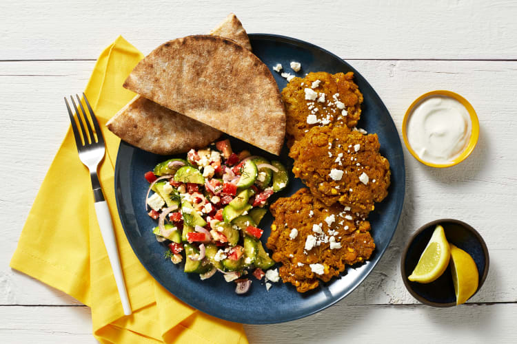

Hello Fresh Spiced Chickpea Fritters

Description
It's hard NOT to love any ingredient when it's fritter-fied, aka
mixed into a batter and cooked until perfectly golden. This
falafel-inspired version stars chickpeas, which we mash, then
combine with a light tempura batter with shawarma spices, fresh dill,
shallot, and garlic. They're shallow-fried, pancake-style, until
crispy, then paired with some of our favorite mezze platter
accompaniments: fluffy pita bread, a refreshing Greek salad, salty
feta, and a creamy, garlicky white sauce. Now comes the most
challenging part of the meal: stacking a little bit of everything
on your fork at once to create the perfect bite!
- 1 unit Persian Cucumber
- 1 unit Shallot
- 1 unit Roma Tomato/li>
- 1/4 ounce Dill
- 1 unit Lemon
- 1 clove Garlic
- 1/2 cup Feta Cheese (Contains Milk)
- 13.4 ounce Chickpeas
- 1 tablespoon Shawarma Spice Blend
- 6 tablespoon Sour Cream (Contains Milk)
- 82 g Tempura Mix (Contains Milk, Eggs, Wheat)
- 2 unit Whole Wheat Pitas (Contains Wheat)
- Salt
- Pepper
- Cooking Oil
- 1 teaspoon Olive Oil
- Adjust rack to top position and preheat oven to 425 degrees.
(TIP: If you have a toaster oven, feel free to skip
preheating—you'll use it to warm the pitas in step 5.) Wash
and dry produce. • Trim and halve cucumber lengthwise; thinly
slice crosswise into half-moons. Dice tomato. Halve, peel, and
thinly slice half the shallot; mince remaining shallot. Pick
and roughly chop fronds from dill. Quarter lemon. Peel and
mince or grate garlic.
- In a small bowl, combine cucumber, tomato, sliced shallot,
half the chopped dill, and half the feta (save the rest for
serving). Stir in a drizzle of olive oil and a squeeze of
lemon juice to taste. Season with salt and pepper. • In a
separate small bowl, combine sour cream with a pinch of garlic
to taste. Stir in water 1 tsp at a time until mixture reaches
a drizzling consistency. Season with salt and pepper.
- Drain and rinse chickpeas. Place in a medium bowl and mash
with a potato masher or fork until almost smooth. (It's OK if
there are still some larger chickpea pieces.) • In a large
bowl, whisk together tempura mix, Shawarma Spice, salt (we
used ¾ tsp; 1½ tsp for 4 servings), and 1/3 cup water until
smooth. (For 4, use 2/3 cup water.) • Stir in mashed chickpeas,
minced shallot, remaining garlic, and remaining chopped dill.
Season with pepper. TIP: If mixture is too thick, add more
water 1 TBSP at a time until it reaches a pancake-batter-like
consistency.
- Heat a 1/3-inch layer of oil in a large, heavy-bottomed pan
over medium- high heat. Once oil is shimmering and hot enough
that a drop of batter sizzles when added to the pan, carefully
add heaping ¼-cup scoops of chickpea batter. TIP: Add your
batter to the pan close to the oil to avoid splatter. You
may need to cook fritters in batches. • Cook fritters until
golden brown and crisp, 3-4 minutes per side. • Using a
slotted spoon, carefully transfer fritters to a
paper-towel-lined plate. Season with a pinch of salt. Turn
off heat.
- While fritters cook, warm pitas on top rack (use a baking
sheet or place directly on oven rack) until pliable. Halve
crosswise. TIP: You can use your toaster oven instead, if
you have one. Keep an eye on the pitas as they warm—they
should be soft, not crispy.
- Divide fritters and salad (draining first) between plates.
Top with remaining feta. Serve with pitas, sauce, and
any remaining lemon wedges on the side. TIP: If you like,
stuff pitas with fritters and salad, then drizzle with
sauce for falafel-inspired sandwiches!